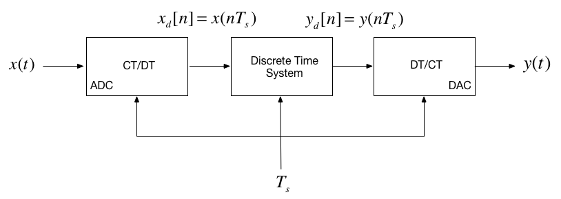

Unit 5.4: Models of Discrete-Time Systems#
Colophon#
An annotatable worksheet for this presentation is available as Worksheet 11.
The Jupytext source code for this page is dt_systems/4/dt_models.md.
You can view the notes for this presentation as a webpage (HTML).
This page is downloadable as a PDF file.
Scope and Background Reading#
In this section we will explore digital systems and learn more about the z-transfer function model.
The material in this presentation and notes is based on Chapter 9 (Starting at Section 9.7) of [Karris, 2012]. I have skipped the section on digital state-space models.
Agenda#
Discrete Time Systems#
In the lecture that introduced the z-transform we talked about the representation of a discrete-time (DT) system by the model shown below:

In this session, we want to explore the contents of the central block.
DT System as a Sequence Processor#
As noted in the previous slide, the discrete time system (DTS) takes as an input the sequence \(x_d[n]\)1 which in a physical signal would be obtained by sampling the continuous time signal \(x(t)\) using an analogue to digital converter (ADC).
It produces another sequence \(y_d[n]\) by processing the input sequence in some way.
The output sequence is converted into an analogue signal \(y(t)\) by a digital to analogue converter (DAC).

What is the nature of the discrete time system?#
The discrete time system (DTS) is a block that converts a sequence \(x_d[n]\) into another sequence \(y_d[n]\)
The transformation will be a difference equation \(h[n]\)
By analogy with CT systems, \(h[n]\) is the impulse response of the DTS, and \(y[n]\) can be obtained by convolving \(h[n]\) with \(x_d[n]\) so:
Taking the z-transform of \(h[n]\) we get \(H(z)\), and from the transform properties, convolution of the signal \(x_d[n]\) by system \(h[n]\) will be multiplication of the z-transforms:
So, what does \(h[n]\) and therefore \(H(z)\) look like?
Transfer Functions in the Z-Domain#
Let us assume that the sequence transformation is a difference equation of the form2:
Take Z-Transform of both sides#
From the z-transform properties
so….
Gather terms#
from which …
Define the transfer function#
We define the discrete time transfer function \(H(z) := Y(z)/U(z)\) so…
… or more conventionally3:
DT impulse response#
The discrete-time impulse reponse \(h[n]\) is the response of the DT system to the input \(x[n] = \delta[n]\)
Last week we showed that
was defined by the transform pair
so
We will work through an example in class.
[Skip next slide in Pre-Lecture]
Example 5#
Karris Example 9.10:
The difference equation describing the input-output relationship of a DT system with zero initial conditions, is:
Compute:
The transfer function \(H(z)\)
The DT impulse response \(h[n]\)
The response \(y[n]\) when the input \(x[n]\) is the DT unit step \(u_0[n]\)
5.1. The transfer function#
5.2. The DT impulse response#
Start with:
MATLAB Solution#
clear all
cd matlab
pwd
format compact
open dtm_ex1_2
ans =
'/Users/eechris/code/src/github.com/cpjobling/eg-247-textbook/dt_systems/4/matlab'
See dtm_ex1_2.mlx. (Also available as dtm_ex1_2.m.)
The difference equation describing the input-output relationship of the DT system with zero initial conditions, is:
Transfer function#
Numerator \(z^2 + z\)
Nz = [1 1 0];
Denominator \(z^2 - 0.5 z + 0.125\)
Dz = [1 -0.5 0.125];
Poles and residues#
[r,p,k] = residue(Nz,Dz)
r =
0.7500 - 0.5000i
0.7500 + 0.5000i
p =
0.2500 + 0.2500i
0.2500 - 0.2500i
k =
1
Impulse Response#
Hz = tf(Nz,Dz,1)
hn = impulse(Hz, 15);
Hz =
z^2 + z
-------------------
z^2 - 0.5 z + 0.125
Sample time: 1 seconds
Discrete-time transfer function.
Plot the response#
stem([0:15], hn)
grid
title('Example 5 - Part 2')
xlabel('n')
ylabel('Impulse response h[n]')

Response as stepwise continuous y(t)#
impulse(Hz,15)
grid
title('Example 5 - Part 2 - As Analogue Signal')
xlabel('nTs [s]')
ylabel('Impulse response h(t)')

5.3. The DT step response#
We will work through this example in class.
[Skip next slide in Pre-Lecture]
Solved by inverse Z-transform.
MATLAB Solution#
See dtm_ex1_3.mlx. (Also available as dtm_ex1_3.m.)
open dtm_ex1_3
Results#

Modelling DT systems in MATLAB and Simulink#
We will consider some examples in class
MATLAB#
Code extracted from dtm_ex1_3.m:
Ts = 1;
z = tf('z', Ts);
Hz = (z^2 + z)/(z^2 - 0.5 * z + 0.125)
Hz =
z^2 + z
-------------------
z^2 - 0.5 z + 0.125
Sample time: 1 seconds
Discrete-time transfer function.
step(Hz)
grid
title('Example 1 - Part 3 - As Analogue Signal')
xlabel('nTs [s]')
ylabel('Step response y(t)')
axis([0,15,0,3.5])

Simulink Model#
See dtm.slx:

dtm
Results#

Converting Continuous Time Systems to Discrete Time Systems#
In analogue electronics, to implement a filter we would need to resort to op-amp circuits with resistors, capacitors and inductors acting as energy dissipation, storage and release devices.
In modern digital electronics, it is often more convenient to take the original transfer function \(H(s)\) and produce an equivalent \(H(z)\).
We can then determine a difference equation that will respresent \(h[n]\) and implement this as computer algorithm.
Simple storage of past values in memory becomes the repository of past state rather than the integrators and derivative circuits that are needed in the analogue world.
To achieve this, all we need is to be able to do is to sample and process the signals quickly enough to avoid violating Nyquist-Shannon’s sampling theorem.
Continuous System Equivalents#
There is no digital system that uniquely represents a continuous system
This is because as we are sampling, we only have knowledge of signals being processed at the sampling instants, and need to reconstruct the inter-sample behaviour.
In practice, only a small number of transformations are used.
The derivation of these is beyond the scope of this module, but in class we’ll demonstrate the ones that MATLAB provides in a function called
c2d
MATLAB c2d function#
Let’s see what the help function says:
help c2d
C2D Converts continuous-time dynamic system to discrete time.
SYSD = C2D(SYSC,TS,METHOD) computes a discrete-time model SYSD with
sample time TS that approximates the continuous-time model SYSC.
The string METHOD selects the discretization method among the following:
'zoh' Zero-order hold on the inputs
'foh' Linear interpolation of inputs
'impulse' Impulse-invariant discretization
'tustin' Bilinear (Tustin) approximation.
'matched' Matched pole-zero method (for SISO systems only).
'least-squares' Least-squares minimization of the error between
frequency responses of the continuous and discrete
systems (for SISO systems only).
'damped' Damped Tustin approximation based on TRBDF2 formula
(sparse models only).
The default is 'zoh' when METHOD is omitted. The sample time TS should
be specified in the time units of SYSC (see "Tim
eUnit" property).
C2D(SYSC,TS,OPTIONS) gives access to additional discretization options.
Use C2DOPTIONS to create and configure the option set OPTIONS. For
example, you can specify a prewarping frequency for the Tustin method by:
opt = c2dOptions('Method','tustin','PrewarpFrequency',.5);
sysd = c2d(sysc,.1,opt);
For state-space models,
[SYSD,G] = C2D(SYSC,Ts,METHOD)
also returns the matrix G mapping the states xc(t) of SYSC to the states
xd[k] of SYSD:
xd[k] = G * [xc(k*Ts) ; u[k]]
Given an initial condition x0 for SYSC and an initial input value u0=u(0),
the equivalent initial condition for SYSD is (assuming u(t)=0 for t<0):
xd[0] = G * [x0;u0] .
For gridded LTV/LPV models (see ssInterpolant), C2D discretizes the LTI
model at each grid point and interpolates the resulting discrete-time
data. To interpolate the continuous-time data instead, first convert
the gridded model to LTVSS or LPVSS. For all other LTV/LPV mode
ls, C2D
uses the Tustin method which amounts to fixed-step integration with the
trapezoidal rule.
See also C2DOPTIONS, D2C, D2D, SSINTERPOLANT, LTVSS, LPVSS, DYNAMICSYSTEM.
Documentation for c2d
doc c2d
Other uses of c2d
DynamicSystem/c2d ltipack.tfdata/c2d
doc c2d
Example: Digital Butterworth Filter#
Design a 2nd-order butterworth low-pass anti-aliasing filter with transfer function \(H(s)\) for use in sampling music.
The cut-off frequency \(\omega_c = 20\) kHz and the filter should have an attenuation of at least \(-80\) dB in the stop band.
Choose a suitable sampling frequency for the audio signal and give the transfer function \(H(z)\) and an algorithm to implement \(h[n]\)
Solution#
See digi_butter.mlx.
First determine the cut-off frequency \(\omega_c\)
wc = 2*pi*20e3
wc =
1.2566e+05
From the lecture on filters, we know the 2nd-order butterworth filter has transfer function:
Substituting for \(\omega_c = 125.6637\times 10^3 \) this is …?
Hs = tf(wc^2,[1 wc*sqrt(2), wc^2])
Hs =
1.579e10
---------------------------
s^2 + 1.777e05 s + 1.579e10
Continuous-time transfer function.
Bode plot#
MATLAB:
doc bode
bode(Hs,{10e4,10e8})
grid

Sampling Frequency#
From the bode diagram, the frequency roll-off is -40 dB/decade for frequencies \(\omega \gg \omega_c\). So, \(|H(j\omega)| = -80\) dB is approximately 2 decades above \(\omega_c\).
w_stop = 100*wc
w_stop =
1.2566e+07
To avoid aliasing, we should choose a sampling frequency twice this = ?
\(\omega_s = 2\times \omega_\mathrm{stop}\) rad/s.
ws = 2* w_stop
ws =
2.5133e+07
Sampling frequency (\(f_s\)) in Hz = ?
fs = ws/(2*pi)
fs =
4000000
Sampling time \(T_s = ?\)
\(T_s = 1/fs\;\mathrm{s}\)
Ts = 1/fs
Ts =
2.5000e-07
Digital Butterworth#
zero-order-hold equivalent
Hz = c2d(Hs, Ts)
Hz =
0.0004862 z + 0.0004791
-----------------------
z^2 - 1.956 z + 0.9565
Sample time: 2.5e-07 seconds
Discrete-time transfer function.
Step response#
step(Hz)

Algorithm#
From previous result:
Dividing top and bottom by \(z^2\) …
expanding out …
Inverse z-transform gives …
in algorithmic form (compute \(y[n]\) from past values of \(u\) and \(y\)) …
Block Diagram of the digital BW filter#

As Simulink Model#
open digifilter
Convert to code#
To implement:
/* Initialize */
Ts = 0.25e-06; /* more probably some fraction of clock speed */
ynm1 = 0; ynm2 = 0; unm1 = 0; unm2 = 0;
while (true) {
un = read_adc();
yn = 1.956*ynm1 - 0.9665*ynm2 + 486.2e-6*unm1 + 479.1e-6*unm2;
write_dac(yn);
/* store past values */
ynm2 = ynm1; ynm1 = yn;
unm2 = unm1; unm1 = un;
wait(Ts);
}
Summary#
Discrete Time Systems
Transfer Functions in the Z-Domain
Modelling digital systems in MATLAB/Simulink
Continuous System Equivalents
In-class demonstration: Digital Butterworth Filter
Reference#
- Kar12
Steven T. Karris. Signals and systems with MATLAB computing and Simulink modeling. Orchard Publishing, Fremont, CA., fifth edition, 2012. ISBN 9781934404232. Library call number: TK5102.9 K37 2012 LOCATE. URL: https://ebookcentral.proquest.com/lib/swansea-ebooks/detail.action?docID=3384197&pq-origsite=primo.
Solutions to Example 5#
Answer to 5.1.#
The transfer function is
Answer to 5.2.#
The DT impulse response:
Answer to 5.3.#
Step response:
Worked solutions#
Solution example5.1.pdf
Solution example5.2.pdf
Solution example5.3.pdf
Comments#
PC soundcards can sample audio at 44.1 kHz so this implies that the anti-aliasing filter is much sharper than this one as \(f_s/2 = 22.05\) kHz.
You might wish to find out what order butterworth filter would be needed to have \(f_c = 20\) kHz and \(f_{\mathrm{stop}}\) of 22.05 kHz.